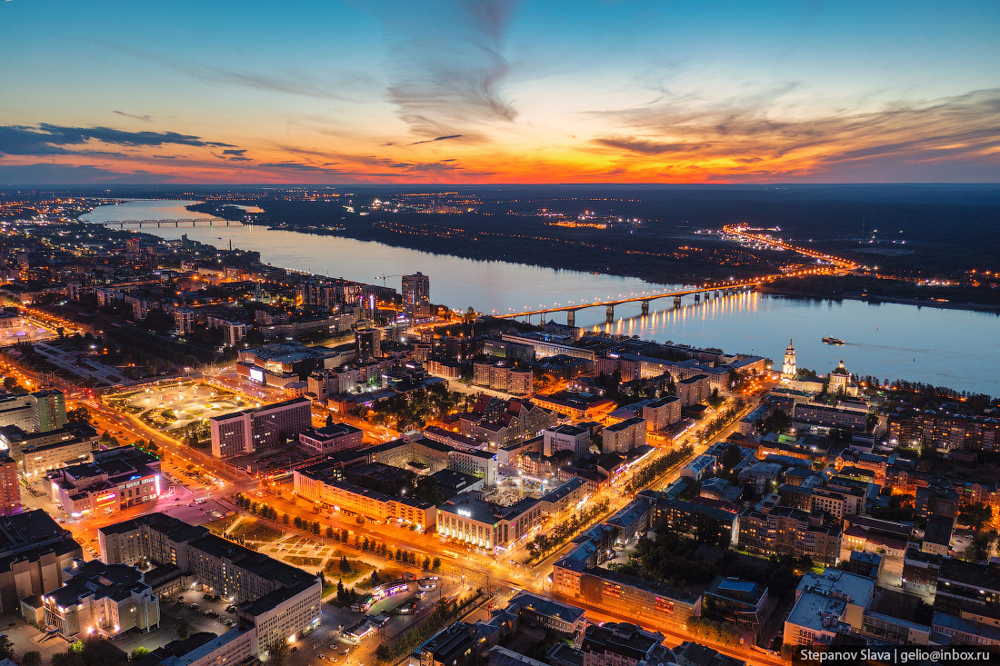

Пермь
Пермь - город на востоке европейской части России, в Предуралье, на берегах реки Камы, ниже впадения в неё реки Чусовой, административный центр Пермского края и Пермского района, транспортный узел на Транссибирской магистрали, речной порт, имеет статус города краевого значения и городского округа.
Достопримечательности:
- Пермяк солёные уши - «Пермяк солёные уши» — достопримечательность Перми, жанровая городская скульптура на Комсомольском проспекте около гостиницы «Прикамье». Состоит из двух частей — фигуры фотографа и круглой рамки с большими ушами, в которую фотографирующиеся могут поместить своё лицо. Памятник открыт 1 апреля 2006 года.
- Скульптура Иван Семёнов - В Перми на улице Сибирской, в сквере кукольного театра, стоит памятник второкласснику и второгоднику Ивану Семенову. Второклассник Иван Семенов - самый несчастный человек на свете. Жизнь для него сплошная мука. Не жизнь, а учеба. А учиться он не любит. В 1966 году сняли художественный фильм про непутевого хулигана-школяра по книге пермского писателя Льва Давыдычева. Сотни мальчишек пришли на кастинг, мечтая сыграть в кино лопоухого второгодника. Фильм «Три с половиной дня из жизни Ивана Семенова, второклассника и второгодника» показали в 37 странах, и он имел грандиозный успех.
- Легенда о пермском медведе - «Пермский медведь» — скульптура в Перми, изображающая идущего медведя. Было 2 варианта скульптуры. Первый вариант — 2006—2008. Последний вариант установлен в 2009 году.